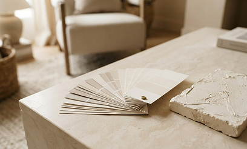
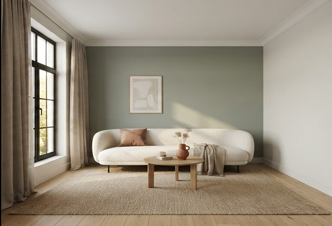
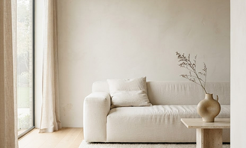
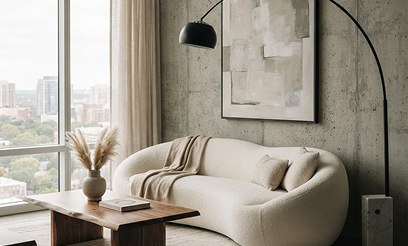
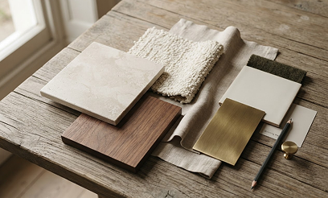

PSICOLOGIA E CODICI NCSTonalia Design Journal
Guide pratiche sulla psicologia del colore, codici pittura NCS, abbinamenti materici e trasformazioni in 3D per progettare casa senza errori

Da salotto spoglio a Rifugio Urbano: come i codici NCS e il rovere hanno trasformato questo trilocale
Dalla palette alla scelta dei materiali: un percorso in 3D per immaginare un living più caldo, coerente e personale.
8 MIN DI LETTURA Leggi il caso studio ↗Guide e ispirazioni
 MATERIALI E ABBINAMENTI
MATERIALI E ABBINAMENTI
Noce Canaletto, Velluto e Terracotta: guida agli abbinamenti
7 min di lettura Leggi di più
MATERIALI E ABBINAMENTIStile Minimalista vs Moderno: quale fa per te?
5 min di lettura Leggi di più
PSICOLOGIA E CODICI NCSVerde salvia in soggiorno: il colore che invita alla calma
5 min di lettura Leggi di più
MATERIALI E ABBINAMENTIGres e rovere: come far dialogare pavimenti e arredi
6 min di lettura Leggi di più PSICOLOGIA E CODICI NCS
PSICOLOGIA E CODICI NCS